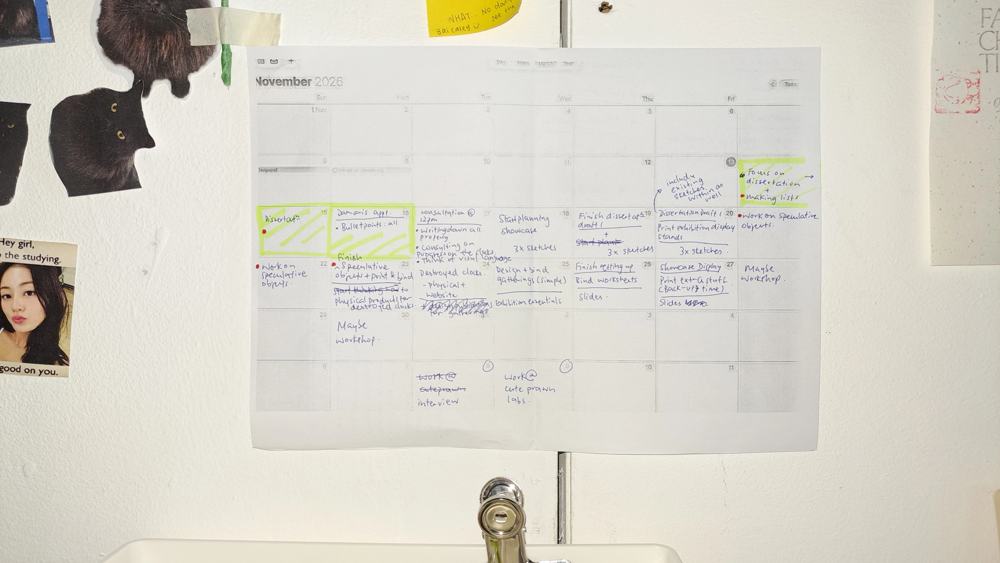

The one where I attempt to complete draft 1 of my dissertation

Dissertation hours
As can be seen from the schedule, its shaping up to be one of the busiest weeks in my life. I shall see this as another block project, given the similar timeline, but with higher stakes. So for this week, I worked on my dissertation. I have this crazy belief that I can do it in 2 days, so that I can work on my showcase. I did not finish it in 2 days.
Provocative clock sketches
As of 20 Nov, I managed to complete about 31 sketches, each as nonsensical as the last. Unfortunately, I could only think of 30...which eventually watered down to 20... Most of the ideas here sounds good as a concept but I simply could not imagine it as a device.
Preparing the provocative clocks catalogue
Sketching like crazy. Tried to bring my vision to life for all the ideas seen above, but some i really couldnt visualise. During the illustration process, what I found the most hard was keeping line thicknesses consistent and maintaining a consistent visual style e.g. the eye features, mouth etc.
This was a really crazy week. I can't write much because everything was moving so fast. But what I learnt this week is its best not to hyperfixate on anything, just keep moving, get things done